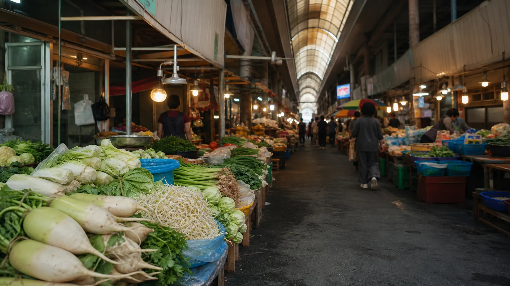
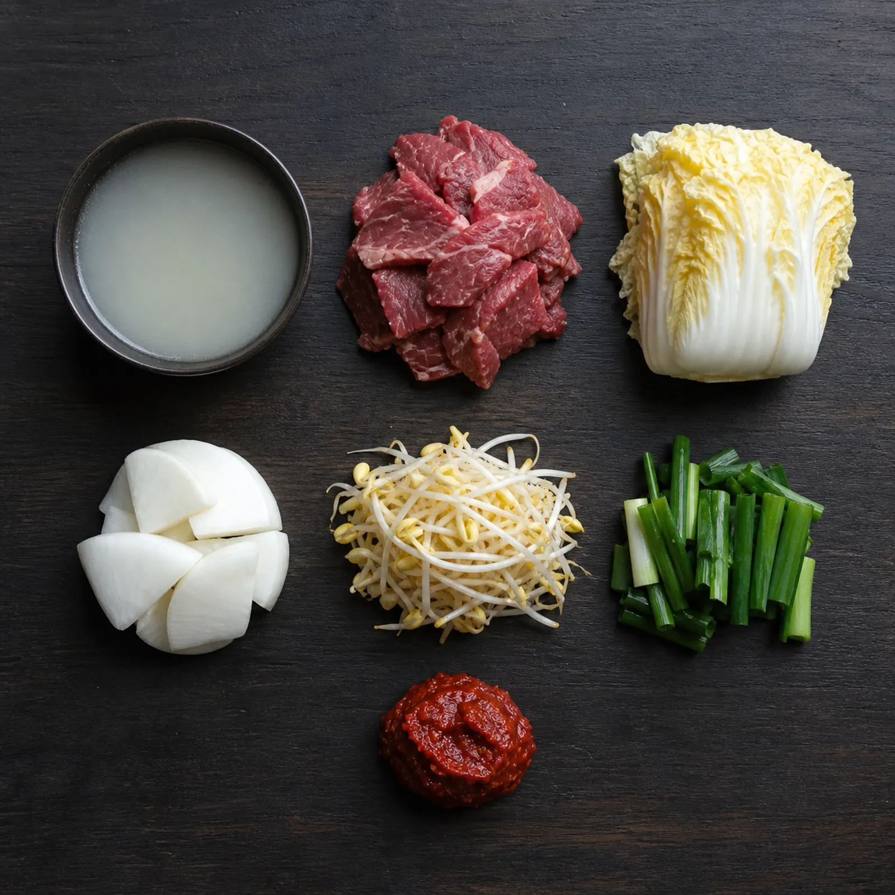
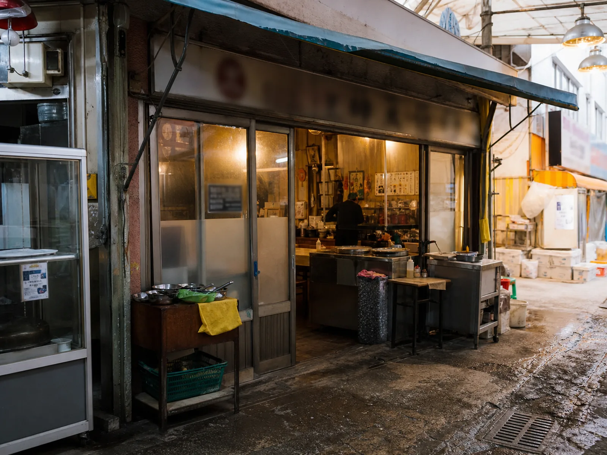
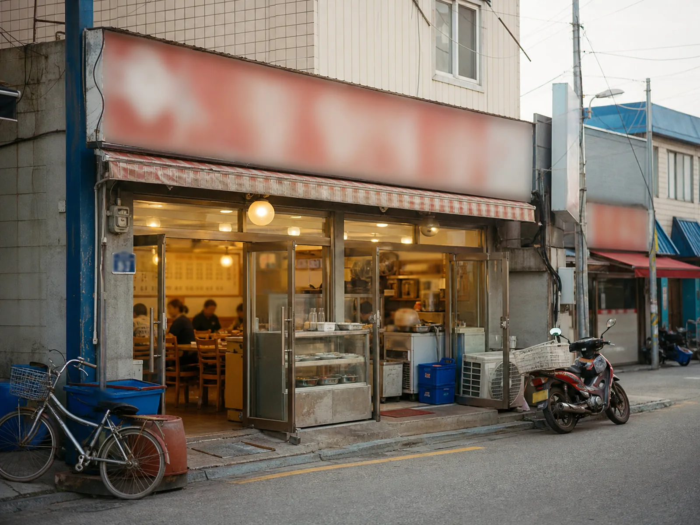

ORIGIN
장이 서기 전날 밤부터,
솥은 끓고 있었다
국밥은 전국에 있다. 전주에는 콩나물국밥, 대구에는 따로국밥, 부산에는 돼지국밥이 있다. 그러면 안성국밥은 무엇이 다른가.
원조 논쟁부터 떠올렸다면 접어두시길. 안성국밥에는 원조가 없다. 언제 시작됐는지, 어느 집이 처음이었는지 딱 부러지게 답할 기록이 남아 있지 않다.
그런데 어쩌면 없는 편이 나은지도 모르겠다. 시작을 모르는 음식은 누구의 것도 아니어서, 결국 모두의 것이 된다.
확실한 건 하나다. 이 음식은 장터에서 태어났다.
안성장은 컸다. 조선 후기 대구, 전주와 함께 3대 장으로 꼽혔다는 이야기가 전해질 만큼 컸다. 장이 서는 날이면 사람이 몰렸고, 몰린 사람은 밥을 먹어야 했다.
여기서부터는 장터에 떠도는 이야기다. 누가 처음 한 말인지는 아무도 모른다.
“국밥집 솥은 장 서기 전날 밤부터 끓었다.”
새벽 어스름에 소달구지를 끌고 도착한 장꾼이 자리를 펴기 전에 먼저 들르는 곳이 국밥집이었다는 것이다. 그래서 솥은 밤새 꺼지지 않았고, 국물은 아침이 되어서야 제 맛이 들었다고 한다.
“안성 국밥에 채소가 많은 건 인심이 아니라 계산이었다.”
고기만으로 배를 채우게 하면 값이 안 맞았다는 이야기다. 그래서 무를 넣고 배추를 넣고 콩나물을 넣어 양을 만들었고, 그게 굳어져 지금의 모양이 되었다는 것. 인심 좋은 옛날이야기보다 이쪽이 훨씬 그럴듯하게 들린다.
그리고 가장 재미있는 이야기 하나.
“안성 국밥은 놋그릇에 나왔다.”
안성은 유기(鍮器)의 고장이었다. ‘안성맞춤’이라는 말 자체가 여기서 나왔다. 안성에 주문한 놋그릇은 치수가 어긋나는 법이 없었고, 그래서 딱 들어맞는 것을 두고 안성맞춤이라 부르게 됐다는 것이다.
그 유기 장인들이 밥을 먹던 자리에서 국밥이 놋그릇에 담겨 나왔다는 이야기. 놋그릇은 열을 오래 붙잡는다. 한겨울 장터에서 식지 않는 국물을 마지막 한 술까지 뜨겁게 먹을 수 있었던 이유가 그것이었다고 한다.

BASICS
한 그릇의 기본
기본 구성은 정직하다.
육수 · 소고기 · 배추 · 무 · 콩나물 · 파 · 고춧가루 다대기
익숙한 재료다. 그런데 여기서부터가 재미있다.
이름은 하나인데 솥은 제각각이다. 어떤 집은 사골을 넣고 어떤 집은 넣지 않는다. 고기 부위도 다르고, 채소를 던져 넣는 순서도 다르고, 불을 낮추는 타이밍도 다르다. 같은 안성국밥을 먹었다는 두 사람이 전혀 다른 국물을 이야기하는 일이 흔하다.
그래서 좋은 질문은 “누가 원조냐”가 아니다. “이 집은 오늘 이 한 그릇을 어떻게 만들었나.” 이쪽이다.

THREE POTS
안성의 솥들
시장 안쪽의 집은 장이 서는 호흡에 맞춰 국물을 데운다. 큰길가의 집은 하루 종일 같은 불을 지킨다. 어느 솥은 사골에서 시작하고, 어느 솥은 고기만으로 국물을 세운다. 채소를 넣는 순서와 불을 낮추는 타이밍이 달라지면, 같은 안성국밥도 전혀 다른 한 그릇이 된다.
상호를 붙이기 전에 먼저 보이는 것은 그 결이다. 골목의 집과 길가의 집은 간판보다 육수의 시작점에서 갈라진다. 세 번째 솥은 그 사이 어딘가에 있다. 확인한 이름만 나중에 얹으면 된다.

